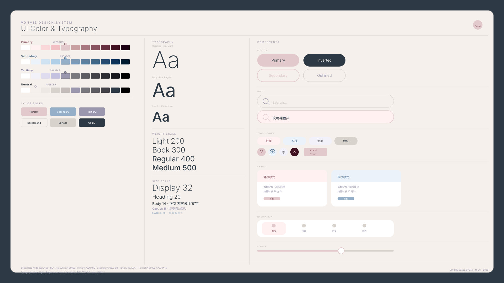

产品正面
渲染
Design System Overview
从调研到规范，每一个决策都有依据

11
次用户访谈
2
个标杆品牌
4
组色阶
6
层圆角
调研背景
用数据与洞察建立信任感 · 深度 1v1 · 20–30 岁都市女性 · 一线在校生 / 白领
访谈维度覆盖：EMS 认知、购买决策、审美偏好、生活方式关联。以下六条核心洞察均直接对应一条设计决策。
「科技感 = 安全可靠」，而非炫技
「你走进一个美容院，看到他们那么有科技感，就觉得它肯定是安全的——这是最重要的……」
→
设计决策：科技感服务于信任。视觉做「精密医仪感」——冷静、可靠，不做科幻炫技。
「医疗白 + 警示红」= 恐惧
「假如它做得像医疗设备，那种白色然后中间几个按钮是红色的……你可能会看到就觉得怕了。」
→
设计决策：禁用冷白 + 警示红。主色改为玫瑰裸 #E2CACC —— 保留专业感，去除恐惧感。
莫兰迪 = 「选它不会输错」
「莫兰迪这种……大部分人都会喜欢，有种『选择它不会输错的感觉』……」
→
设计决策：全链路低饱和莫兰迪调：主色 #E2CACC、辅色 #96AFC8、页面背景 #F5F0EB。
圆润感 = 想触摸
「C 第一眼吸引我的是它突起来的圆润线条……那个按钮让我一看到就很想去按它。」
→
设计决策：产品正面倒角 R96、侧面 R32；UI 按钮全圆角胶囊，卡片圆角 12px。
跳色带来「玩具感」
「如果没有那个跳色（橙色），会不会看起来稍微……可信度高一点？」
→
设计决策：禁止高饱和跳色；辅色严控为烟蓝 / 薰衣草灰；材质哑光磨砂提升专业感。
小红书 = 女性生活方式分享
「主要是小红书，感觉更集中于女生之间分享生活经验的一个软件。」
→
设计决策：叙事改为「有仪式感的生活方式」—— 场景化、真实皮肤、暖光，避免功能硬广罗列。
推导式流程（工业设计逻辑）
- 市场分析（差异化点）
- 用户研究（产品特性 / 用户画像 / 使用场景）
- 设计基因关键词（极简 × 圆润 × 莫兰迪 × 专业可信赖）
- 视觉元素提取（参考品牌 → 迁移至 VONMIE）
- 设计规范落地（颜色 / 字体 / 圆角 / 组件 / 材质）
品牌基因分析
向标杆学习叙事与颜色，踩过的雷对应 VONMIE 的设计禁忌
Stanley · 颜色是叙事工具
「田园绿」让 Stanley 从工地来到野餐布——一个颜色完成形象跃迁。
→ VONMIE：玫瑰裸 #E2CACC 让 EMS 从医疗仪器变成梳妆台单品。
| 维度 | 具体策略 | VONMIE 借鉴 |
|---|---|---|
| 叙事重构 | 工地保温杯 → 精致女生必备 | 医疗 EMS → 居家护理仪式必备 |
| 饥饿营销 | 限定色 + 联名 = 社交传播 | 成熟后可做设计师联名 / 限定色礼盒 |
| 质量托底 | 视觉再好，产品必须过关 | 医疗级硅胶 + ABS 哑光，不降标 |
踩的雷 → VONMIE 禁忌
- 品牌割裂（男性工具 vs 少女粉）→ 从第一天锚定「专业的温柔」
- 过度联名失主见 → 联名谨慎，视觉系统要有强势主张
- 质量召回摧毁叙事 → 材质规范从设计层锁死
Lululemon · 技术转生活方式叙事
把「面料技术」讲成生活方式。 → VONMIE：把 EMS 技术 叙事为 「舒缓日常仪式感」。
| 维度 | 具体策略 | VONMIE 借鉴 |
|---|---|---|
| 精准人群 | 只卖给「在乎自己身体的人」 | 锁定「24 岁都市女性，认真对待自己」 |
| 技术叙事 | 面料技术 → 生活方式 | EMS → 舒缓日常仪式感 |
| 稀缺 / 社群 | 限量色、践行者社群 | 限定配色款；鼓励分享「使用仪式感」至小红书 |
踩的雷 → VONMIE 禁忌
- 扩品类太快、记忆模糊 → 前期只做美容仪，不泛化
- 依赖单一市场 → 建立清晰品牌资产，不依赖单一渠道
- 过度营销显廉价 → 视觉克制，少说话，让产品说话
Lululemon 用「体育科技黑」撑专业，「季节马卡龙」造话题。
VONMIE 转译：深不锈钢 #2D3A45 作专业底，玫瑰裸 #E2CACC 作温柔亮色的核心张力。
设计调性锚定
基于双品牌分析 + 访谈 + 色彩趋势（玫瑰裸在趋势中高比例出现），VONMIE 位于工业冷硬材质语言与柔粉生活方式之间——靠近柔粉，但用哑光金属感撑住专业感。
核心定位词：「专业的温柔」·「让你放心的精致」
精确设计规范 · 色彩
Seed · Primary / Secondary / Tertiary · Neutral
Seed Color
Rose Nude #E2CACC
Primary
primary
#E2CACClight
#FFF0F1dark
#885460on-primary
#2D3A45hover
#D4BBBFSecondary
secondary
#96AFC8light
#EBF2FAdark
#406688on-secondary
#FFFFFFTertiary & Neutral
tertiary
#9A97AFtert-light
#F2F0F8bg
#F5F0EBsurface
#D8D2CCdark / text
#2D3A45Primary 完整阶梯
字体系统
Inter + PingFang SC / Noto Sans SC · 精确到 px 与字重
英文：Inter · 中文：PingFang SC，Noto Sans SC
Precision Beauty
页面主标题
区块标题样式
卡片标题样式
大段正文用于说明与引用，行高 1.6 保证可读性。
标准正文与表格内文字。
注释与辅助信息
UPPERCASE LABEL
组件规范
按钮 · 输入框 · 卡片 · 标签 · 导航 · 滑块 — 圆角与 hex 与文档一致
按钮
高度 48px · 内边距 14px 32px · 圆角 9999px · 悬停 200ms ease
输入框
高 48px · 圆角 8px · 描边 1px #D8D2CC
标签胶囊
高 28px · 6px 14px · 11px Medium
Primary
Secondary
Tertiary
Neutral
滑块
轨道 6px #D8D2CC · 填充 #E2CACC · 手柄 24px
圆角 · 间距 · 动效 · 产品形态
1/3 递进：R96 → R32 → R9（产品）· UI 令牌见下表
圆角系统
--radius-xs4px — 标签内嵌、代码块--radius-sm8px — 输入框、小卡片--radius-md12px — 标准卡片、弹窗--radius-lg16px — 大卡片、图片容器--radius-xl24px — Hero 容器--radius-full9999px — 所有按钮
间距
4 · 8 · 12 · 16 · 24 · 32 · 48 · 64 · 96px
动效
- 按钮 200ms · 卡片 300ms · ease
- 卡片悬停：
translateY(-4px)+ 阴影加深 - 输入激活：描边 150ms ease
产品形态规范（SVG）

CSS 变量清单
可直接粘贴至项目 index.css
:root {
/* ── Colors ── */
--color-bg: #F5F0EB;
--color-white: #FFFFFF;
--color-surface: #D8D2CC;
--color-dark: #2D3A45;
--color-dark-2: #3D4E5C;
--color-dark-3: #444249;
--color-primary: #E2CACC;
--color-primary-light: #FFF0F1;
--color-primary-mid: #F0C0C4;
--color-primary-dark: #885460;
--color-primary-deeper: #643040;
--color-on-primary: #2D3A45;
--color-primary-hover: #D4BBBF;
--color-secondary: #96AFC8;
--color-secondary-light: #EBF2FA;
--color-secondary-dark: #406688;
--color-on-secondary: #FFFFFF;
--color-secondary-hover: #7A9AB8;
--color-tertiary: #9A97AF;
--color-tertiary-light: #F2F0F8;
--color-tertiary-dark: #444249;
--color-on-tertiary: #FFFFFF;
--color-text: #2D3A45;
--color-text-muted: #9A97AF;
--color-text-light: #C4BCBA;
--color-text-on-dark: #F5F0EB;
--color-text-on-primary: #2D3A45;
--color-border: #D8D2CC;
--color-border-light: #EDE8E3;
--color-border-active: #E2CACC;
--color-accent: #FAC8C8;
--color-accent-warm: #969678;
/* ── Radius ── */
--radius-xs: 4px;
--radius-sm: 8px;
--radius-md: 12px;
--radius-lg: 16px;
--radius-xl: 24px;
--radius-full: 9999px;
/* ── Typography ── */
--font-sans: 'Inter', -apple-system, BlinkMacSystemFont, sans-serif;
--font-zh: 'PingFang SC', 'Noto Sans SC', sans-serif;
--text-display: 200 48px/1.1 var(--font-sans);
--text-h1: 200 32px/1.2 var(--font-sans);
--text-h2: 300 24px/1.3 var(--font-sans);
--text-h3: 300 20px/1.4 var(--font-sans);
--text-body-lg: 400 16px/1.6 var(--font-sans);
--text-body: 400 14px/1.6 var(--font-sans);
--text-caption: 400 12px/1.5 var(--font-sans);
--text-label: 600 10px/1.4 var(--font-sans);
/* ── Spacing ── */
--space-1: 4px;
--space-2: 8px;
--space-3: 12px;
--space-4: 16px;
--space-6: 24px;
--space-8: 32px;
--space-12: 48px;
--space-16: 64px;
--space-24: 96px;
/* ── Shadows ── */
--shadow-sm: 0 2px 12px rgba(45,58,69,0.06);
--shadow-md: 0 4px 20px rgba(45,58,69,0.10);
--shadow-lg: 0 8px 32px rgba(45,58,69,0.14);
--shadow-primary: 0 4px 16px rgba(226,202,204,0.4);
/* ── Transitions ── */
--transition-fast: 150ms ease;
--transition-normal: 200ms ease;
--transition-slow: 300ms ease;
/* ── Layout ── */
--max-width: 1440px;
--page-padding: 96px;
--grid-cols: 12;
--grid-gap: 24px;
}与需求文档 PART 5 全文一致，可直接粘贴至项目 index.css。
设计禁忌清单
PART 6 · 执行红线
- 禁止使用纯白
#FFFFFF作为页面背景（使用#F5F0EB） - 禁止使用纯黑
#000000作为正文色（使用#2D3A45） - 禁止冷白 + 警示红配色（用户明确表达恐惧感）
- 禁止高饱和跳色（饱和度 > 60%）
- 禁止方形直角容器（最小圆角 4px）
- 禁止标题字重超过 500
- 禁止镜面 / 亮面质感的 UI 元素
- 禁止「功能罗列式」视觉叙事（须场景化、仪式感）